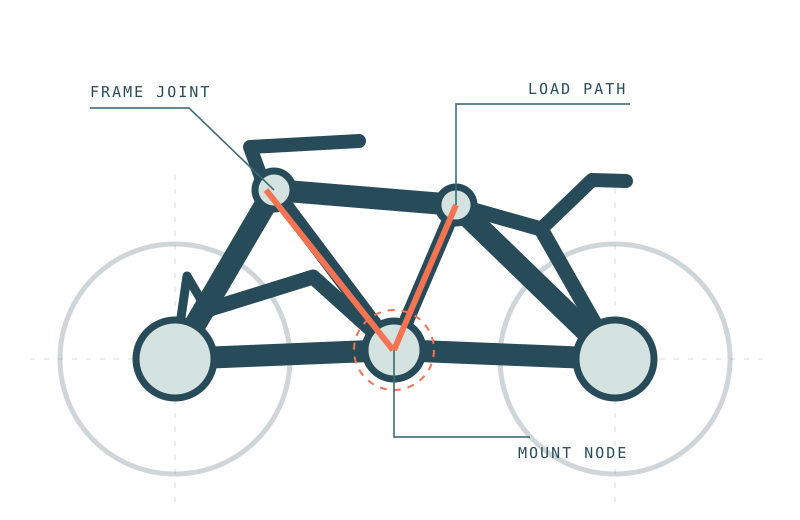

TECHNICAL STUDY / 01

DESIGN → ANALYSE → DOCUMENTPROJECT DOCUMENTATION
THE ENGINEERING STORY
From concept to understanding.
01 / CONTEXT
What this project explores
02 / METHODOLOGY
How I approached it
03 / LEARNING
What to look for
INTERACTIVE ENGINEERING MODEL
Explore it in 3D.
Inspect the actual CAD geometry in your browser. Rotate, zoom, and explore the model.
3D engineering model
Load the model to inspect its geometry interactively.
EXPLORE THE EVIDENCE
Inside the project.
Browse uploaded gallery files and available project-repository previews. Open a preview to inspect the file.
PROJECT EVIDENCE
LOADINGGallery & documents
Retrieving available previews from GitHub…
The gallery includes files added through the portfolio editor and, when available, media from the public project repository. CAD files remain available from the project repository.